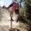
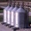
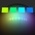
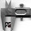
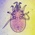
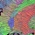
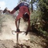

|  |  |  |  |  |  | ||||||||||
| air | bane | biff | bins | dye | echo | ell | gage | hest | hoover | limn | mite | moss | nrrd | ten | unrrdu |
NEWS
- Sept 16, 2003: See how teem made all the renderings for an upcoming IEEE Visualization 2003 paper.
- Sept 16, 2003: teem-users and teem-coders mailing lists created
- Sept 10, 2003: Teem Version 1.5.0 released
The core code is written in C (about 85,000 lines), and organized as a set of libraries, each with some coarsely defined functionality. The libraries depend heavily on each other in a non-circular way, so they are built and distributed as a group, collectively called teem. The only required external library is the C math library ("-lm"), although teem can optionally use the pthread, zlib, bzip2, and PNG libraries. The most popular teem library is nrrd, which supports N-dimensional image processing, and a flexible file format for N-dimensional raster data.
Along with the teem libraries, I've written some command-line tools. These programs demonstrate the functionality of the libraries, as well as providing a simple and easy way to get work done with teem, without having to write C/C++ code. The most popular is unu, a convenient and concise interface to nrrd. Also, qbert is a stand-alone program based on gage which can generate volumes of a format used by Simian, the volume renderer used in our Vis '01 paper.
Because I also use VTK for some of my work, I distribute some of my VTK/tcl/tk programs. Information about teem, the binaries, and the VTK programs, are below.
The bins:

air : Core utilities and macros 
hest : Command-line parsing  biff : Error message collection 
ell : Linear algebra functions and macros. 
nrrd : N-dimensional image processing 
unrrdu : Command-line utilities based on nrrd dye : Color representation and conversion moss : Geometric transforms and sampling of images gage : Filtered point-sampling in volumes 
bane : Re-Implementation of my MS thesis (and VolVis98 paper) 
limn : Graphics and drawing hoover : Simple volume rendering framework. 
mite : Simple scalar volume renderer echo : Ray-tracer 
ten : Diffusion tensor analysis and visualization

bins : qbert, mrender, vprobe, and others.